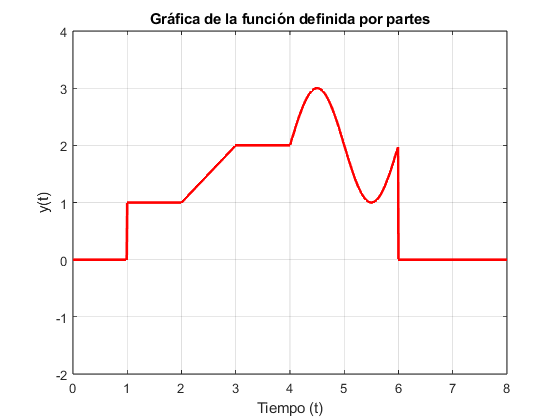

close all;
clc;
u = @(t) (t >= 0);
t = 0:0.01:10;
y = 0*(u(t)-u(t-1))+ ((u(t - 1) - u(t - 2)))+((t-1).* (u(t - 2) - u(t - 3))) + (2 * (u(t - 3) - u(t - 4))) +(sin(2*pi*0.5*t)+2).*(u(t-4)-u(t-6));
header = {'X', 'CH1', 'Start', 'Increment,'};
metadata = {'Sequence', 'Volt', -2.950000e-03, 5.000000e-06};
fileID = fopen('./csv/ejercicio3.csv', 'w');
fprintf(fileID, '%s,%s,%s,%s\n', header{:});
fprintf(fileID, '%s,%s,%.6e,%.6e\n', metadata{:});
for i = 1:length(t)
fprintf(fileID, '%d,%.2e,\n', i-1, y(i));
end
fclose(fileID);
disp('Datos guardados en ./csv/ejercicio3.csv');
plot(t, y, 'r', 'LineWidth', 2);
axis([0 8 -2 4]);
grid on;
xlabel('Tiempo (t)');
ylabel('y(t)');
title('Gráfica de la función definida por partes');
Datos guardados en ./csv/ejercicio3.csv
